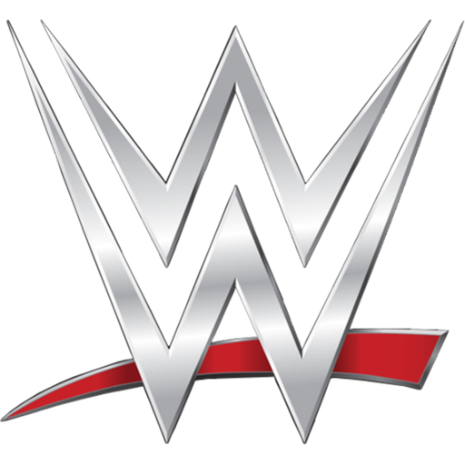
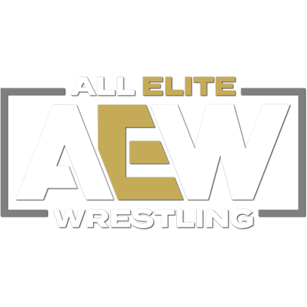
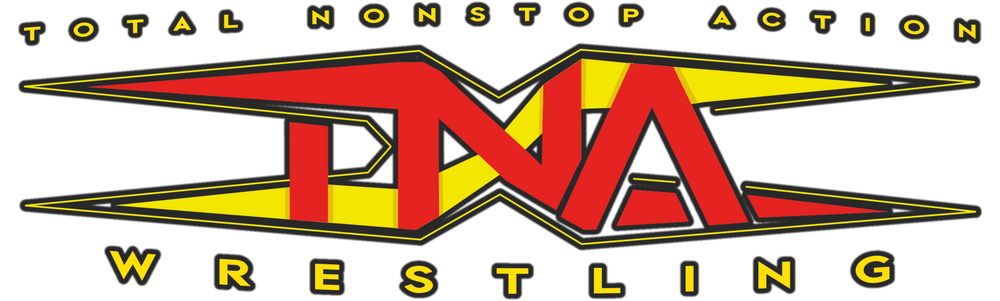
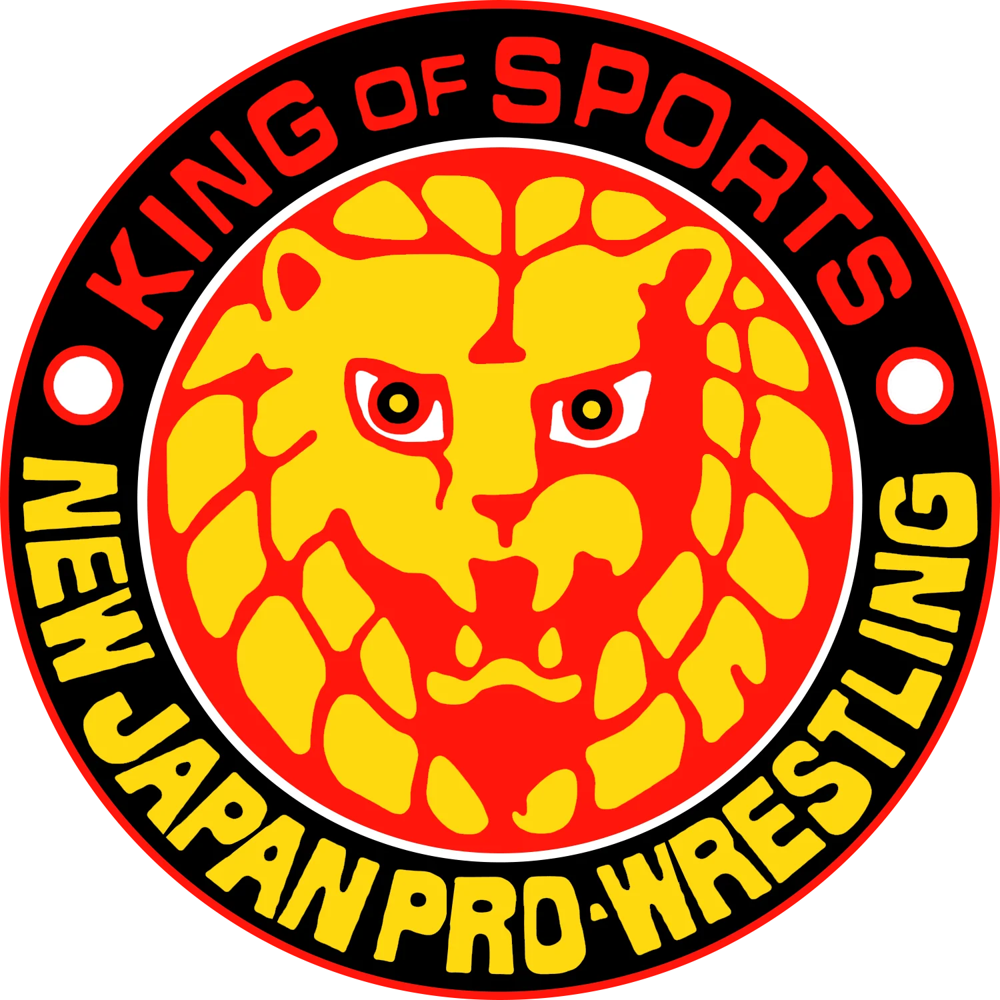
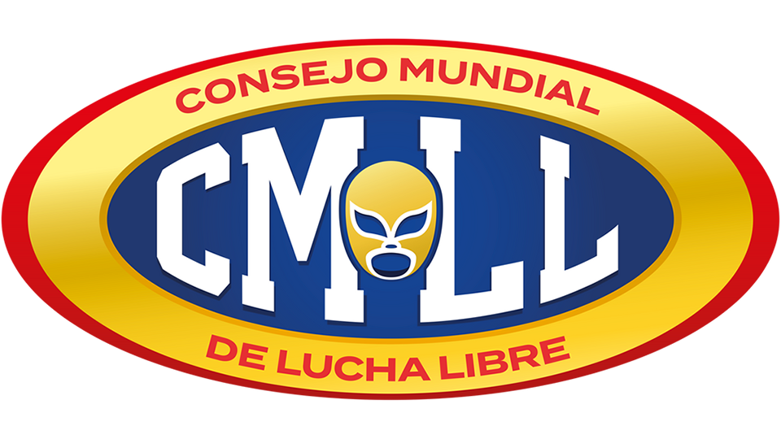
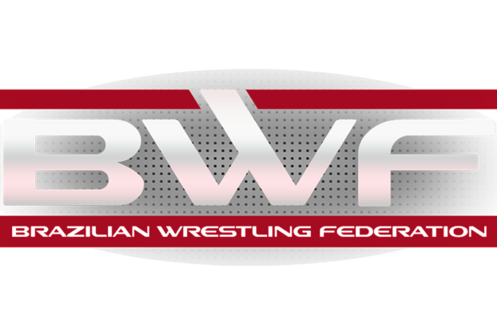
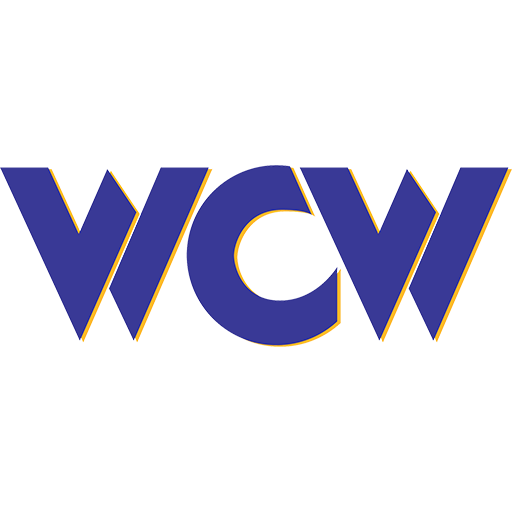

Luta livre, lucha libre, pro-wrestling, telecatch, puroresu... São muitos nomes que definem essa arte, mas o seu universo é muito mais profundo do que se imagina.
TESTE USUÁRIO
Luta livre, lucha libre, pro-wrestling, telecatch, puroresu... São muitos nomes que definem essa arte, mas o seu universo é muito mais profundo do que se imagina.

A WWE é a maior promoção de wrestling profissional do mundo. Ele promoveu alguns dos lutadores e histórias de maior sucesso e apresentou algumas das lutas e momentos mais icônicos e significativos da história do entretenimento esportivo. Atualmente, a WWE exibe vários programas de alto nível, como Raw e SmackDown, em mais de 150 países, hospeda pelo menos 12 eventos pay-per-view por ano, incluindo WrestleMania, e realiza aproximadamente 320 eventos ao vivo por ano em todo o mundo. Em 2014, a WWE lançou a primeira rede de streaming 24 horas por dia, 7 dias por semana, que eventualmente exibiria toda a biblioteca de vídeos da WWE.

A All Elite Wrestling (AEW) é uma promoção de luta livre profissional americana fundada em 2019 pelo empresário Tony Khan. Consolidada como a principal alternativa global à WWE, a empresa destaca-se pelo foco na performance atlética no ringue e parcerias com promoções internacionais importantes (como NJPW e CMLL)

A Total Nonstop Action (TNA) Wrestling é uma das mais influentes e tradicionais organizações de luta livre profissional (pro wrestling) dos Estados Unidos. Fundada em 2002 por Jeff e Jerry Jarrett, a empresa nasceu com o objetivo de oferecer uma alternativa competitiva e com uma identidade visual e esportiva totalmente diferente do monopólio que a WWE exercia na época. Ao longo de mais de duas décadas de história, a federação passou por reformulações profundas — incluindo o período em que foi amplamente conhecida como Impact Wrestling —, até retomar oficialmente o seu icônico nome TNA.

A New Japan Pro-Wrestling (NJPW) é a maior e mais prestigiada promoção de luta livre profissional do Japão, fundada em 1972 pelo lendário Antonio Inoki. Ela é mundialmente reconhecida por tratar o esporte com um realismo rigoroso, focando na excelência atlética, na honra e no espírito de combate, sendo considerada por muitos fãs a meca do wrestling técnico mundial.

O Consejo Mundial de Lucha Libre (CMLL) é a empresa de luta livre profissional mais antiga do mundo ainda em atividade. Fundada em 1933 por Salvador Lutteroth na Cidade do México (originalmente como Empresa Mexicana de Lucha Libre - EMLL), a federação é amplamente considerada a "catedral" e a guardiã máxima da tradição da lucha libre clássica mexicana.

A Brazilian Wrestling Federation (BWF) é a maior e mais importante federação de luta livre profissional (pro wrestling) do Brasil. Fundada em 2002 pelo lutador e produtor Bob Júnior, ela nasceu com a missão de resgatar e modernizar a era de ouro do clássico Telecatch no país, adaptando o estilo para os moldes do esporte entretenimento internacional.

A World Championship Wrestling (WCW) foi uma gigante promoção americana de luta livre profissional que rivalizou diretamente com a WWE nos anos 90. Fundada em 1988 por Ted Turner, ela foi a única empresa a superar a rival em audiência por 83 semanas consecutivas na famosa "Guerra das Segundas-Feiras" (Monday Night Wars), até fechar e ser comprada pela própria WWE em 2001